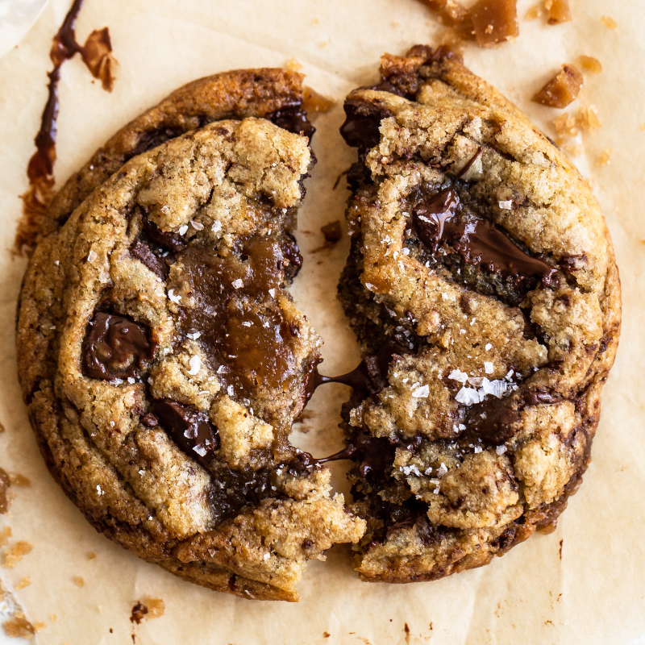

Browned Butter Toffee Chocolate Chip Cookies
Home
Sourdough

Description
This chocolate chip cookie recipe may seem timeconsuming, but it is well worth the effort. Complex flavors, sweet, salty, and nutty to make the perfect bite.
Ingredients
- 2 Sticks Unsalted Butter
- 100g Granulated Sugar
- 200g Lightly Packed Dark Brown Sugar
- 190g All-Purpose Flour
- 127g Bread Flour
- 1 tsp Baking Soda
- 1/2 tsp Baking Powder
- 1 tsp Fine Sea Salt
- 1 tsp Instant Espresso Powder
- 2 Large Eggs plus 1 Egg Yolk at Room Temp
- 2 tsp Vanilla
- 10oz Semisweet Chocolate, Chopped
- 1 cup Toffee Bits
- Flaky Sea Salt, for finishing.
Steps
- In a medium stainless steel sauté pan set over medium heat, melt the butter. Swirling the pan occasionally, continue to cook the butter. It should become foamy with audible cracking and popping noises. Once the crackling becomes quieter, continue to swirl the pan or stir until the butter develops a nutty aroma and brown bits start to form at the bottom. Once the bits are amber in color, remove from heat and pour into a mixing bowl. Be sure to keep the brown bits at the bottom of the pan as well, they hold so much flavor!
- Add the granulated sugar and brown sugar to the hot butter, stirring to combine. Set aside to cool to room temperature.
- In a medium bowl, combine the flours, baking soda, baking powder, salt, and espresso powder.
- To the cooled butter mixture, whisk in the eggs, yolk, and vanilla until combined. Gradually stir in the flour mixture with a rubber spatula. Stir in the chocolate chunks and toffee bits. Wrap dough in plastic wrap and refrigerate for at least 24 hours but no more than 72 hours.
- Let dough sit at room temperature just until it is soft enough to scoop, about 1 hour.
- Preheat the oven to 350ºF. Line baking sheets with parchment paper.
- Divide the dough into 3-tablespoon sized balls using a large cookie scoop and drop onto prepared baking sheets. Dough may be slightly challenging to scoop.Divide the dough into 3-tablespoon sized balls using a large cookie scoop and drop onto prepared baking sheets. Dough may be slightly challenging to scoop.
- At this point, you can portion the dough, place it on a baking sheet, and freeze just until solid. Remove frozen balls of dough to an airtight container and store for up to 6 weeks.
- Bake for 12 to 14 minutes, or until golden brown. Remove from oven and sprinkle flaky sea salt on top of the cookies, if desired. Let cookies cool for 2 minutes before removing to wire racks to cool completely.
- Store in an airtight container at room temperature for up to 3 days.